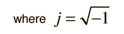

The solution to a quadratic equation that has been placed in the standard form
is given by the quadratic formula
Enter values for the coefficients and click outside the data boxes to initiate the calculation.
For b2 ≥ 4ac there are two real roots:
x+ = and x- =
If b2 < 4ac then the roots are complex numbers:
x+ = + j
and its complex conjugate x- = - j 